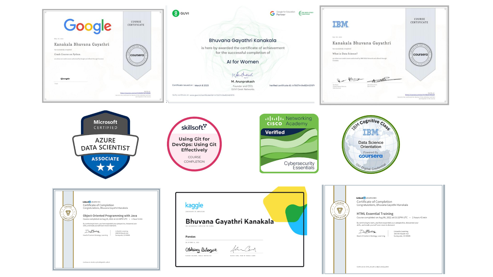

Welcome to my page 🖐
It's Bhuvana Gayathri Kanakala
I am a developer. Also Web Development and Data Science enthusiast
I was born and brought up in Visakhapatnam, Andhra Pradesh.
Currently I am an undergraduate pursuing my B.Tech in CSE from Gayatri Vidya Parishad College of Engineering for Women.
I completed around 15+ courses from various
e-learning platforms. The courses include programming languages like Python, C, C++, HTML, CSS, JS, Data Science that are provided by e-learning platforms like Coursera, Udemy,Great Learning, Sololearn,Cognitive Class.
I belong to service background as both of my parents are teachers.
I learnt hard work, dedication , time management, determination from my parents.
My hobbies include browsing internet through which I learn many new things. I daily browse linkedin for new courses and internships which help me know the unknowns. Listening music is my best ever hobby as it gives me unlimited energy.
Academic Qualifications
| Qualification | Institution Name | University/Board | Year of passing | Points |
|---|---|---|---|---|
| B.Tech. | Gayatri Vidya Prishad College of Engineering for Women | Jawaharlal Nehru Technological University, Kakinada | 2024 | 8.5 (till 4 semesters) |
| Intermediate | Sri Chaitanya Junior College | Board of Intermediate Education | 2020 | 10.0 |
| S.S.C | The Sun School | Board of Secondary Education | 2018 | 10.0 |
G.V.P.C.E.W
Gayatri Vidya Parishad College of Engineering for women is one of the best colleges in Visakhapatnam. I have secured 9104 rank in A.P. EAMCET exam
and got seat in this college. Currently I am studying 2nd semester of 3rd year.I am doing well in my academics and maintaining consistency in learning.I have been learning many things
from my college.I am part of clubs,socitiey and cell like GDSC, CSI, IIC of my college.My college not only teach quality education but also teach ethics and human values.
The faculty are very helpful and friendly.
They helped me in getting the information about the current technologies through which I gained and understood many things.
It's a place meant for discipline.
I am very glad to be a student of G.V.P.C.E.W and I proudly say that I'm #GVPIANS.
Sri Chaitanya
Sri Chaitanya is one of the top most institutions for Intermediate all over India. I became one of the toppers of my school and secured 10.0 points in my S.S.C. After that I joined Sri Chaitanya for intermediate and opted M.P.C. Even during my intermediate I used to be in top 5 in almost in all the class tests and year ending exams. I am the only one who got 10.0 points and highest marks i.e., 971 out of 1000 for entire M.P.C. in my campus. I prepared for JEE mains and qualified in that exam. But unfortunately I neither get into NITs nor IITs. So I decided to work hard for EAMCET.My Mathematics lecturer Mr.A.Appala Naidu sir helped me lot in understanding Mathematics concepts even during the lockdown. His constant support,encouragement,trust helped me in getting good rank in A.P. EAMCET. I was really thankful for his constant support.
The Sun School
The Sun School is one of the best schools in Bheemunipatnam.
I completed my entire schooling from The Sun School.
I was an average student till my 4th.
One day my school came up with an awesome concept i.e., they planned to provide
fee concession for top 5 students in 5th
standard annual exams who were promoted to 6th.
I was awarded scholarship as topped in my 5th standard annual exams.
From that day, I worked hard and maintained consistency in studies.
I had been the 1st ranker for almost 5 years(entire high school) and
finished my high school with zero investment.My school provide quality eductaion at low fee.
I used to particpate in almost all the events that were organized in my school.
I passed my 10th standard with good points in the year 2018.
Skills
| Programming languages | C,C++,Python,Java(Basics) |
|---|---|
| Web technologies: | HTML, CSS, JS(Basics) |
| Operating Systems: | Windows, Mac OS |
| DBMS: | Oracle |
| MS Office: | MS Word and MS Powerpoint |
| Others: | Git and GitHub |
Academic Achievements
- Currently among the top 10 of the B.Tech. class
- Awarded scholarship for securing 1st rank during the entire high schooling (6th-10th )
- Secured 1st prize and 2nd prize (in English and Telugu respectively) in District level Essay writing competition conducted by the Forest Department as a part of “Vanam- Manam”
- Secured good marks (971/1000) in Intermediate and topped the class
- Qualified JEE Mains
- Secured 9104 rank in EAMCET (A.P. state entrance test for Engg.)
Certifications
- Microsoft certified Azure Data Scientist Associate
- Introduction to Web Development,offered by UCDavis on Coursera
- What is Data Science?,offered by IBM on Coursera
- Python Programming:A Concise Introduction,offered by Wesleyan University on Coursera
- AI for Women,provided by GUVI
- Game Development using PyGame,provided by GUVI
- Introduction to OOPs in C++,provided by Great Learning
- Introduction to Cyber Security,provided by Cisco
- Cyber Security Essentials,provided by Cisco
- Using Git for DevOps:Using Git Effectively,offered by Skillsoft on Infosys Springboard
Click here to view my certifications. 
Projects
Currently working on “Integration project” and “Course outcome feedback analysis system”.
Mini projects/Finished works:
View my works by clicking this link
Internships
- Worked as Salesforce Developer at Salesforce virtual internship for a duration of 2 months.
During this internship I learnt various modules on Trailhead related to Salesforce. - Learnt the basic concepts related to Cyber Security during the Cyber Security virtual internship (2 months) provided by Cisco
- Worked as Web Developer intern at Lets Grow More virtual internship for a duration of 1 month.Technologies used are HTML, CSS, JS.
During this I build the following web applications
- To do list
- Responsive registration page
- Worked as Data Science and Business analytics intern at The Sparks Foundation.
During which I developed simple linear regression model to find the score of student based on number of working hours.
Extra Curricular Activities
- Secured 2nd prize in Web development competition conducted by PICSL Club of our college.
- Participated in PPT presentation, article writing competitions
- Participated in project expo as well as various IEEE events
- Being a Balvikas student I volunteered for Sri Satya Sai Seva organization
- Web Development team lead in GDSC- GVPCEW, organized 10+ events related to web
- Team lead in Kalam Dream Labs internship
- Completed 8 levels of Hindi exams conducted by Dakshin Bharat Hindi Prachar Sabha
- Cleared Group-I Balvikas exam conducted by Sri Satya Sai Seva Organizations
Personal Details
I was born on 15th September 2002 in a middle class family. I am the last child to my parents. Both my parents are post graduates and are teachers. I have two sisters who are graduates.
My hobbies include listening to music, coins collection, discussion with friends, browsing internet
The languages that I know are Telugu, English, Hindi
My strengths include
Hardworking,
Ability to interact with people,
Multi tasking.
Address for Communication:
D.no:11-30-53
China bazaar,opposite govt college
Kalla street
Bheemunipatnam
Visakhapatnam district.